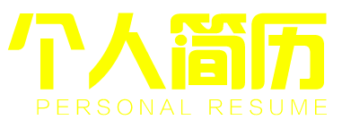
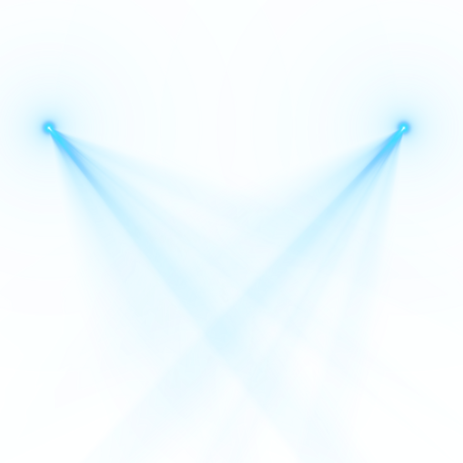

Are you ready!
- 我是谁？
- 我的专业能力
- 我都做了些什么
- 我是怎样的人
- 我的目标
我是谁?

- 姓名：毕少龙
- 来自：河北省蔚县
- 爱好：音乐、旅游
- 专业：WEB前端
我的专业技能
-
HTML5
- CSS3
- JQUERY
- boost
- 移动端
我是怎样的人
- 我出生在河北张家口市蔚县
- 所以我继承了我们那的性格
- 热情、勇敢、大方、善良
- 但也有时候
- 粗心大意，不认真，不仔细
- 这是我的缺点，也是我需要进步的地方
- 希望在同学们可以监督
- 我个人喜欢听音乐、旅游、喜欢安安静静的漫步
- 那样我觉得整个世界都是安静的、平和的
- 还有，我要送给大家几句话
- 生命，所有人只有一次。
- 相同的时间里，比别人体验更多，
- 你就拥有更多。
- 趁着这个美好的时光，
- 趁着时间与身体还允许你向前迈进，
- 请珍惜你上场的机会，
- 为家人的幸福努力，
- 为精彩的未来拼搏，
- 为自己的选择喝彩！
- 折腾，才不辜负生命给予的上场机会
我的目标
- 目前我还是一位学生
- 正在向以后的道路上前行
- 将来要做一名出色的WEB前端工程师
- 不久的将来，就要踏上社会
- 我知道，社会是残酷的
- 但是，它是不可能打败我
- 我要尽自己最大的努力
- 来迎接属于我自己的未来
感谢您的赏析，谢谢！